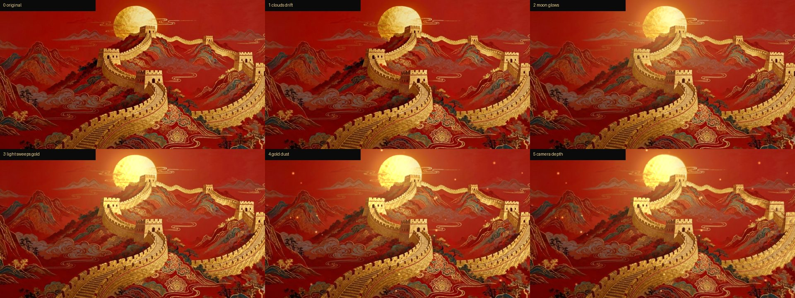

The Great Wall, animated
A 6 second trial. Tap the video if it does not start by itself.
How it was built, step by step:
- Find the gold: the wall, the moon and the thin lines.
- Find what can move: the red sky and the swirl clouds.
- Drift the clouds with a slow wave.
- Make the moon glow and breathe.
- Sweep a band of light across the gold, with small sparkles.
- Float gold dust that twinkles.
- Move the camera in slowly, with the wall moving a little more than the sky.

Back to the Beijing guide